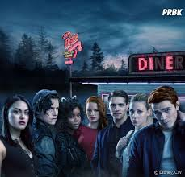

riverdale
A série riverdale é um drama adolescente que segue os moradores de uma
pequena cidade americana chamada riverdale.Apesar de ser uma ficção,a
serie é baseada em eventos reais que aconteceram na década de 1950.

A serie Riverdale,criada pelos mesmos produtores de Teen Wolf,
é um suspense adolescente que segue os moradores de uma pequena cidade
aericana que luta para manter sua história e tradições vivas.
Apesar de Riverale parecer uma cidade idílica,há muto mais do que meets the eye e,
á medida que a série progide,os segredos das famílias ricas e poderosas da cidade
começaram a vir á tona.A serie é baseada nos quadrinhos Archie Comics e apresenta
personagens iconicos como